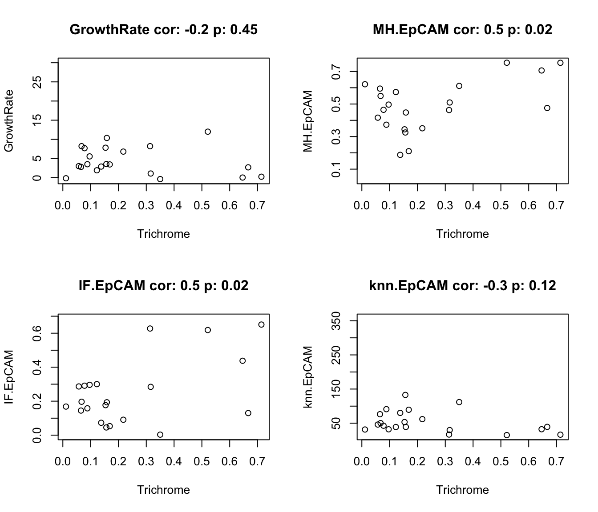
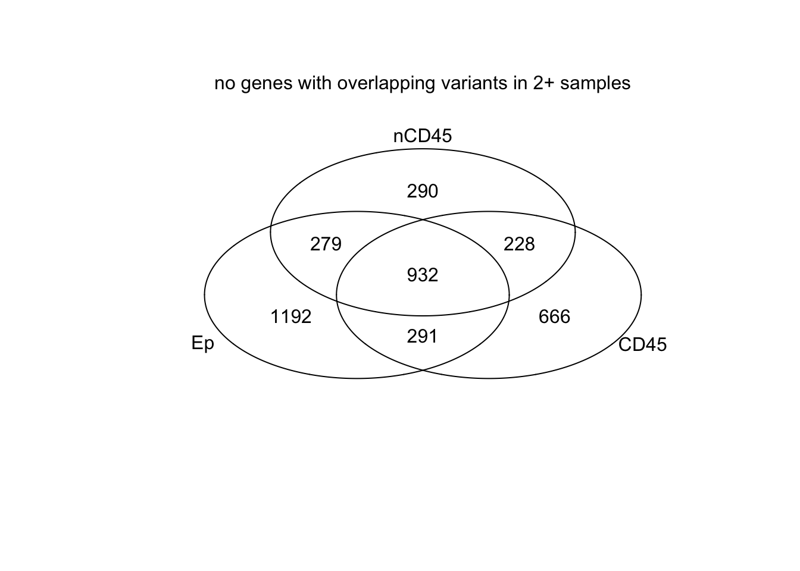
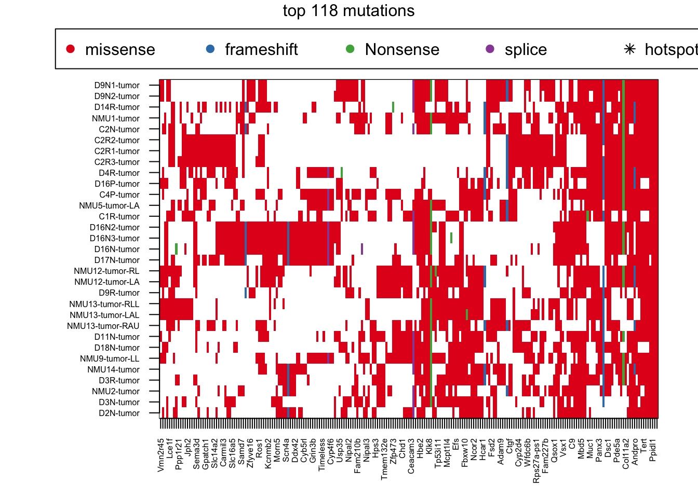
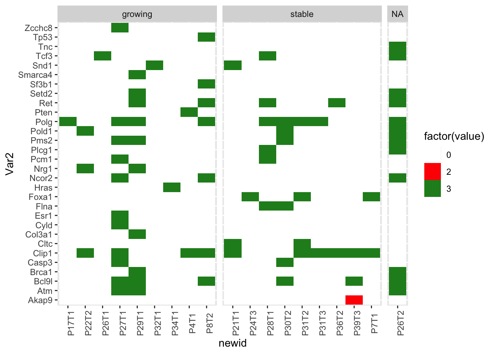
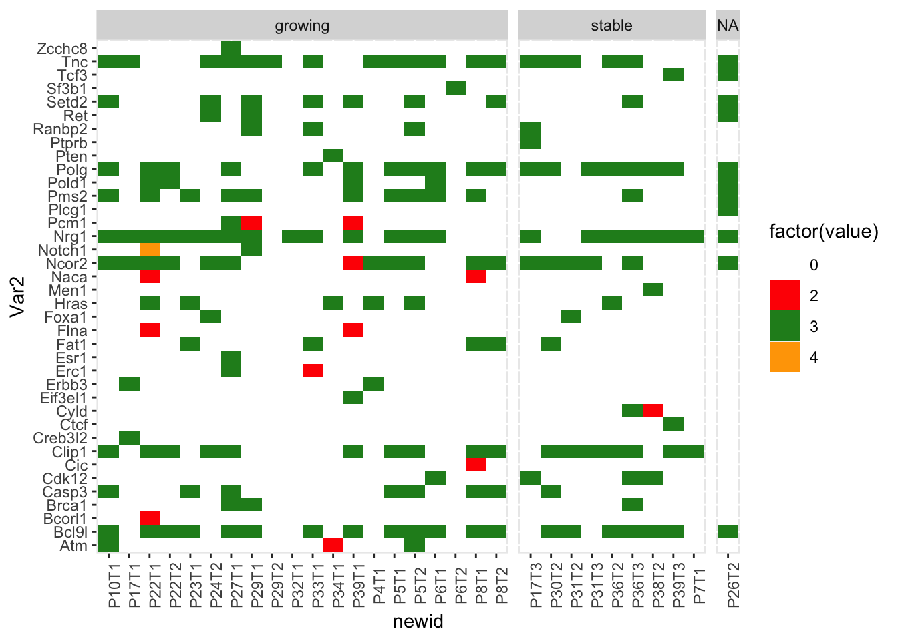

Chapter 23 Mutations in progression cohort
hfiles=dir("../data/haplotypeCaller/output_HaplotypeCaller_May/progression/",
pattern=".txt", full.names = T)
allHfilesP=list()
allCodingHaploP=list()
allCosmicHaploP=list()
for (i in 1:length(hfiles)){
A1=read.delim(hfiles[i], sep="\t", stringsAsFactors = F)
A1[which(A1==(-1), arr.ind=T)]=""
cNames=sapply(strsplit(colnames(A1)[12:27], "\\.\\.\\.\\."), function(x) x[2])
cNames[13:16]=paste(c("LOF", "LOF", "NMD", "NMD"), cNames[13:16], sep=".")
colnames(A1)[12:28]=c(cNames, "GEN")
GEN2=sapply(strsplit(A1$GEN, ":"), function(x) x[2])
gRef=sapply(strsplit(GEN2, ","), function(x) x[1])
gAlt=sapply(strsplit(GEN2, ","), function(x) x[length(x)])
A1$n_ref=as.numeric(gRef)
A1$n_alt=as.numeric(gAlt)
A1$VAF=A1$n_alt/(A1$n_alt+A1$n_ref)
allHfilesP[[i]]=A1[which(A1$n_ref+A1$n_alt>10), ]
allCodingHaploP[[i]]=A1[which(A1$HGVS_P!="" & A1$n_ref+A1$n_alt>10), ]
allCosmicHaploP[[i]]=A1[which(A1$GENE%in%RatCosmic & A1$n_ref+A1$n_alt>10), ]
}
## names of the files
fNam=unlist(strsplit(hfiles, "_filt_HCR_ann_siftB.txt")) #remove HCR where not needed
fNam=unlist(strsplit(fNam, ".vcf.g"))
fNam2=paste(fNam, ".fastq.gz", sep="")
fNam2=sapply(strsplit(fNam2, "/"), function(x) x[length(x)])
idx1=infoTableFinal$SampleID[match(fNam2, infoTableFinal$FqFile)]
idx1[which(is.na(idx1))]=fNam2[which(is.na(idx1))]
idx1[grep("CD45plus", idx1)]=substr(idx1[grep("CD45plus", idx1)],10, 21)
# sNames=paste(tempAnnot$Rat_ID[idx1],tempAnnot$Location[idx1], tempAnnot$Fraction[idx1], sep="_")
names(allHfilesP)=idx1
names(allCodingHaploP)=idx1
names(allCosmicHaploP)=idx1
# remove the samples which do not pass QC
idx2rm=setdiff(grep("fastq.gz", idx1), grep("CD45plus", idx1))
## write all these lists to file
allHfilesP=allHfilesP[-idx2rm]
allCodingHaploP=allCodingHaploP[-idx2rm]
allCosmicHaploP=allCosmicHaploP[-idx2rm]
save(allHfilesP,allCodingHaploP, allCodingHaploP, file=sprintf("outputs/HaplotypeVariants_progression_all_%s.Rdata", Sys.Date()))23.1 Summary of common mutations:
MallCodingHaploP=melt(allCodingHaploP, measure.var="POS")
MallCodingHaploP$mutPos=paste(MallCodingHaploP$GENE, MallCodingHaploP$value)
VarTypes=c("frameshift", "missense", "start_lost", "stop_gained", "nonsense", "stop_retained", "splice")
n2=unique(unlist(sapply(VarTypes, function(x) grep(x, MallCodingHaploP$ANNOTATION))))
MallCodingHaploFuncP=MallCodingHaploP[ n2, ]
## Look at epithealial sampleslook at topCOSMIC:
xa=grep("Ep", MallCodingHaploFuncP$L1)
MallEpi=MallCodingHaploFuncP[xa, ]
EpVarList=table(MallCodingHaploFuncP$GENE[xa])
EpVarNames=names(EpVarList)
EpVarN2=names(EpVarList[which(EpVarList>1)])
EpVarListB=table(MallCodingHaploFuncP$mutPos[xa])
EpLoc=names(EpVarListB)[which(EpVarListB>1)]
## Look at CD45 samples
xa=grep("CD45$", MallCodingHaploFuncP$L1)
CDVarList=table(MallCodingHaploFuncP$GENE[xa])
CDVarNames=names(CDVarList)
CDVarN2=names(CDVarList[which(CDVarList>=1)])
CDVarListB=table(MallCodingHaploFuncP$mutPos[xa])
CDLoc=names(CDVarListB)[which(CDVarListB>=1)]
## Look at DN samples
xa=grep("DN", MallCodingHaploFuncP$L1)
DNVarList=table(MallCodingHaploFuncP$GENE[xa])
DNVarNames=names(DNVarList)
DNVarN2=names(DNVarList[which(DNVarList>1)])
DNVarListB=table(MallCodingHaploFuncP$mutPos[xa])
DNLoc=names(DNVarListB)[which(DNVarListB>1)]
#pdf("~/Desktop/Supp5-progression-RNA-specific-mutations-gene-level.pdf", height=6, width=6)
venn(list(Ep=EpVarNames, CD45=CDVarNames, DN=DNVarNames))
mtext("no genes w mutations overlapping in different fractions")
venn(list(Ep=EpVarN2, CD45=CDVarN2, DN=DNVarN2))
mtext("no genes with overlapping variants in 2+ samples")
venn(list(Ep=EpLoc, CD45=CDLoc, DN=DNLoc))
mtext("no locations with overlapping variants in 2+ samples")
23.2 Look at the common mutations (cosmic ones)
color coding: 1. splice 2. frameshift 3. missense 4. stop-gained
Look for genes which we reported to be common in this cohort previously, as well as the breast-cancer specific ones
GeneList=c("Atm", "Tert", "Ncor2", "Epha3", "Arid1a", "Tp53", "Pten", "Pik3ca", "Pik3r1", "Esr1", "Ctcf", "Brca1", "Brca2", "Notch1", "Kmt2d", "Foxa1", "Gata3", "Mdm4", "Ccne1")
MallCodingHaploFuncPC=MallCodingHaploFuncP[which(MallCodingHaploFuncP$GENE%in%c(topCOSMIC, GeneList)), ]
MallCodingHaploFuncPC=MallCodingHaploFuncPC[which(MallCodingHaploFuncPC$FILTER=="PASS"), ]
xab=unique(MallCodingHaploFuncPC$ANNOTATION)
MallCodingHaploFuncPC$ANNOTATION[grep("frameshift_variant",MallCodingHaploFuncPC$ANNOTATION )]="frameshift_variant"
MallCodingHaploFuncPC$ANNOTATION[grep("missense_variant",MallCodingHaploFuncPC$ANNOTATION )]="missense_variant"
MallCodingHaploFuncPC$ANNOTATION=as.numeric(factor(MallCodingHaploFuncPC$ANNOTATION, levels=c("splice_region_variant&synonymous_variant", "frameshift_variant", "missense_variant", "stop_gained")))
AcastTab=acast(MallCodingHaploFuncPC[ ,c("L1", "GENE", "ANNOTATION")],
L1~GENE, fun.aggregate = max)
AcastTab[which(AcastTab=="-Inf", arr.ind = T)]=0
indx=rownames(AcastTab)[grep("Ep", rownames(AcastTab))]
indx=substr(indx, 1, nchar(indx)-3)
n2=unlist(sapply(indx, function(x) grep(x, rownames(AcastTab))))
AcastTab2=AcastTab
AcastTab[grep("CD45", rownames(AcastTab)), ]=sign(AcastTab[grep("CD45", rownames(AcastTab)), ])
AcastTab[grep("DN", rownames(AcastTab)), ]=sign(AcastTab[grep("DN", rownames(AcastTab)), ])*2
AcastTab[grep("Ep", rownames(AcastTab)), ]=sign(AcastTab[grep("Ep", rownames(AcastTab)), ])*3
#pdf("~/Desktop/FigureS3_biphasic_mutations_again.pdf", height=12, width=15)
image(AcastTab[n2, ], xaxt="none", yaxt="none", col=c("white", "red", "blue", "forestgreen"))
axis(1, at=seq(0, 1, length=nrow(AcastTab[n2, ])), rownames(AcastTab[n2, ]), las=2)
axis(2, at=seq(0, 1, length=ncol(AcastTab)), colnames(AcastTab), las=2)
View the above using only the Epcam samples:
Acast2=AcastTab2[grep("Ep", rownames(AcastTab)), ]
rS=colSums(Acast2)
Acast2=Acast2[ ,-which(rS==0)]
#pdf("~/Desktop/FigureS3_common_mutations_again.pdf", height=12, width=12)
# also group this according to growing vs stable
m2=melt(Acast2)
head(m2)
## Var1 Var2 value
## 1 10L_D_Ep Akap9 0
## 2 10R_BL_Ep Akap9 0
## 3 10R_BU_Ep Akap9 0
## 4 11L_B_Ep Akap9 0
## 5 11N_D_Ep Akap9 0
## 6 11R_C_Ep Akap9 0
m2$growth=Cdata$Tumor.Growth[match(substr(m2$Var1, 1, nchar(as.character(m2$Var1))-3), Cdata$TumorID)]
m2$Treatment=Cdata$Treatment[match(substr(m2$Var1, 1, nchar(as.character(m2$Var1))-3), Cdata$TumorID)]
m2$newid=Cdata$NewID[match(substr(m2$Var1, 1, nchar(as.character(m2$Var1))-3), Cdata$TumorID)]
ggplot(m2, aes(x=newid, y=Var2, fill=factor(value)))+geom_tile()+facet_grid(~growth, scale="free_x", space="free")+theme(axis.text.x=element_text(angle=90))+scale_fill_manual(values=c("white","red", "forestgreen", "orange"))
pdf("~/Desktop/FigureS3_common_mutations_ep_again.pdf", height=12, width=12)
ggplot(m2, aes(x=newid, y=Var2, fill=factor(value)))+geom_tile()+facet_grid(~Treatment+growth, scale="free_x", space="free")+theme(axis.text.x=element_text(angle=90))+scale_fill_manual(values=c("white","red", "forestgreen", "orange"))
dev.off()
## quartz_off_screen
## 2
Candidates=c("Polg", "Foxa1", "Ncor2", "Atm")
pvals=rep(NA, length(Candidates))
for (i in 1:length(Candidates)){
xa=table(m2$value[which(m2$Var2==Candidates[i])], m2$growth[which(m2$Var2==Candidates[i])])
pvals[i]=fisher.test(xa)$p.value
}Repeat in the DN samples
Acast2=AcastTab2[grep("DN", rownames(AcastTab)), ]
rS=colSums(Acast2)
Acast2=Acast2[ ,-which(rS==0)]
#pdf("~/Desktop/FigureS3_common_mutations_again.pdf", height=12, width=12)
# also group this according to growing vs stable
m3=melt(Acast2)
head(m3)
## Var1 Var2 value
## 1 10L_C_DN Atm 0
## 2 10R_BU_DN Atm 0
## 3 11L_B_DN Atm 0
## 4 11R_C_DN Atm 0
## 5 11R_D_DN Atm 0
## 6 12L_D_DN Atm 0
m3$growth=Cdata$Tumor.Growth[match(substr(m3$Var1, 1, nchar(as.character(m3$Var1))-3), Cdata$TumorID)]
m3$Treatment=Cdata$Treatment[match(substr(m3$Var1, 1, nchar(as.character(m3$Var1))-3), Cdata$TumorID)]
m3$newid=Cdata$NewID[match(substr(m3$Var1, 1, nchar(as.character(m3$Var1))-3), Cdata$TumorID)]
ggplot(m3, aes(x=newid, y=Var2, fill=factor(value)))+geom_tile()+facet_grid(~growth, scale="free_x", space="free")+theme(axis.text.x=element_text(angle=90))+scale_fill_manual(values=c("white","red", "forestgreen", "orange"))
pdf("~/Desktop/FigureS3_common_mutations_dn_again.pdf", height=12, width=12)
ggplot(m3, aes(x=newid, y=Var2, fill=factor(value)))+geom_tile()+facet_grid(~Treatment+growth, scale="free_x", space="free")+theme(axis.text.x=element_text(angle=90))+scale_fill_manual(values=c("white","red", "forestgreen", "orange"))
dev.off()
## quartz_off_screen
## 2
Candidates=c("Casp3", "Hras", "Fat1", "Setd2", "Ranbp2", "Pold1", "Pms2")
pvals=rep(NA, length(Candidates))
x1=table(m3$growth[which(m3$Var2==Candidates[1])])
for (i in 1:length(Candidates)){
xa=prop.test(c(
length(which(m3$value[which(m3$growth=="growing" & m3$Var2==Candidates[i])]>0)),
length(which(m3$value[which(m3$growth=="stable" & m3$Var2==Candidates[i])]>0))), x1)
pvals[i]=xa$p.value
}
pvals
## [1] 0.3774645 0.7197694 0.9561687 0.3774645 1.0000000 0.3881479 0.1133864
Candidates=c("Casp3", "Hras", "Fat1", "Setd2", "Ranbp2", "Pold1", "Pms2")
pvals=rep(NA, length(Candidates))
for (i in 1:length(Candidates)){
xa=table(m3$value[which(m3$Var2==Candidates[i])], m3$growth[which(m3$Var2==Candidates[i])])
pvals[i]=fisher.test(xa)$p.value
}Also compare here if there is a difference in frequency between DN and Ep samples:
Candidates=c("Casp3", "Hras", "Fat1", "Setd2", "Ranbp2", "Pold1", "Pms2", "Bcl9l","Atm" )
pvals=rep(NA, length(Candidates))
x1=c(length(which(m2$Var2==Candidates[1])), length(which(m3$Var2==Candidates[1])))
for (i in 1:length(Candidates)){
xa=prop.test(c(
length(which(m2$value[which( m2$Var2==Candidates[i])]>0)),
length(which(m3$value[which( m3$Var2==Candidates[i])]>0))), x1)
pvals[i]=xa$p.value
}
pvals
## [1] 0.31627188 0.30894961 0.16343819 0.21479916 0.26039249 1.00000000 0.28667561
## [8] 0.03536095 0.87669802